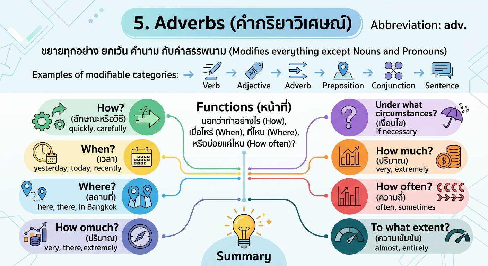

Adverbs
5. Adverbs : คำกริยาวิเศษณ์ ตัวย่อคือ adv
คำที่ขยายทุกอย่าง ยกเว้น คำนาม กับคำสรรพนาม
ตัวอย่างสิ่งที่ขยายได้ เช่น verb, adjective, adverb, preposition, conjunction, ประโยค
หน้าที่: บอกว่าทำอย่างไร (How) ทำเมื่อไหร่ (When) ทำที่ไหน (Where) หรือบ่อยแค่ไหน (How often)
แบ่งเป็น
How?
adv. ที่บอก ลักษณะหรือวิธี
เช่น
quickly, carefully
When?
adv. ที่บอก เวลา
เช่น
yesterday, today, recently
Where?
adv. ที่บอก สถานที่
เช่น
here, there, in Bangkok
Under what circumstances?
adv. ที่บอก เงื่อนไข
เช่น
if necessary
How much?
adv. ที่บอก ปริมาณ
เช่น
very, extremely
How often?
adv. ที่บอก ความถี่
เช่น
often, sometimes
To what extent?
adv. ที่บอก ความเข้มข้น
เช่น
almost, entirely
